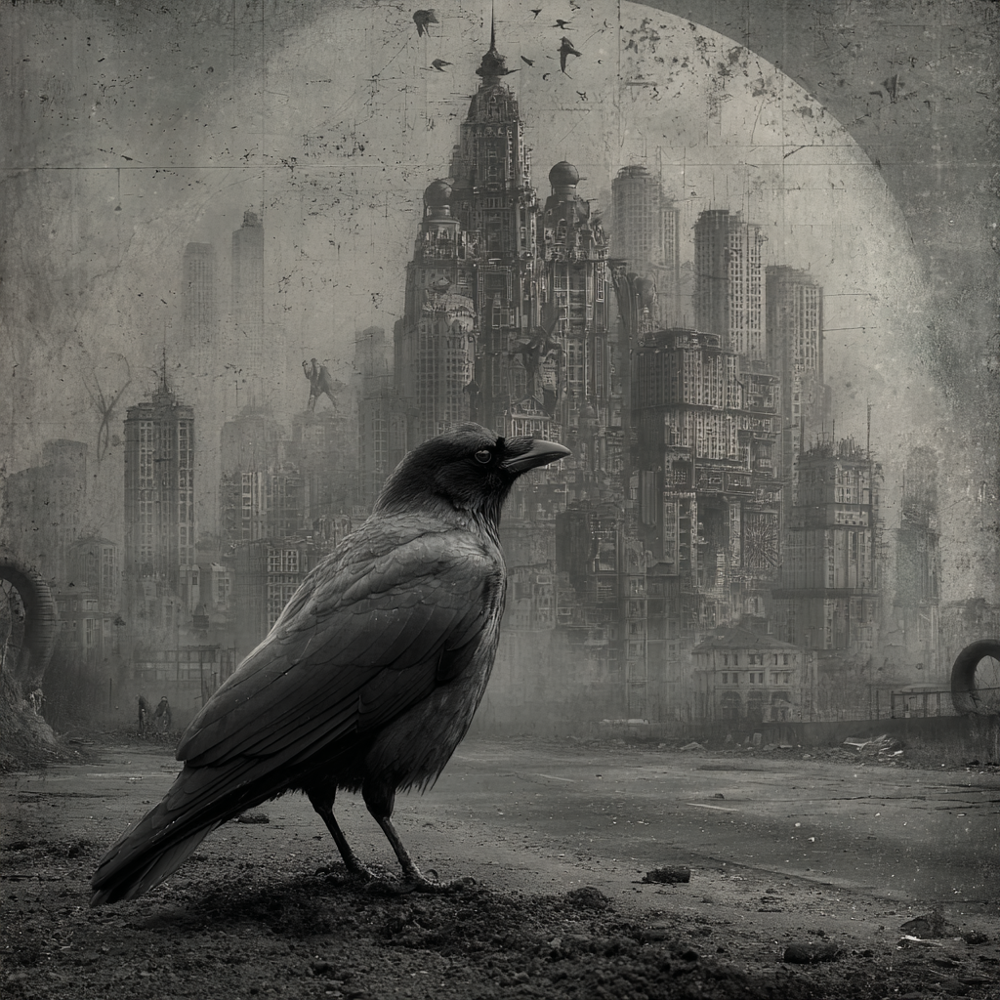

Alkusäkeet
Kaikella on aina alkunsa, sanotaan, mutta monesti alku on jälkeenpäin mielivaltaisesti valittu hetki musiikin tekemisen prosessissa
Tunsimme Danielin kanssa jo puolitoista vuosikymmentä ja meillä oli takana niin erilaisia jamikokoonpanoja kuin yhteinen bändiprojektikin. Soittajina tiemme erosivat tilapäisesti, kun Daniel lähti pohjoiseen. Jotain silti jäi kesken ja usean vuoden ajan vieraillessaan etelässä pidimme kahdestaan usein parin päivän soittosessioita. Näissä syntyivät ensimmäiset "arkaais-marttilaiset" kappaleet. Kun Daniel muutti takaisin Helsinkiin 2020, hankimme melko pian ensimmäisen bändikämppämme ja siinä toiminta yhä jatkuu.
Joulukuussa 2020 Daniel yllätti ja pyysi vanhan ystävänsä Markuksen kämpille juomaan olutta. Markuksen tausta oli klassisesta sellosta, mutta bändikokemukset rajoittuivat kamariorkesteriin. Hän ilmeisesti piti kuulemastaan ja saimme houkuteltua hänet toisenkin kerran paikan päälle – jälleen ilman selloa, jota hän ei suostunut kaivamaan esille ilman tarkkaa harkintaa. Silti hauskanpito musiikin parissa paljasti heti yhteyden meidän kolmen välillä.
Kolmansia treenejämme voidaan pitää varsinaisena Marttien syntyhetkenä, jos sellainen halutaan löytää. Markus ja sello saapuivat ja muodostimme piirin. Daniel aloitti rummuissa, minä kitaran kanssa ja kokeilimme jotain aiemmin harjoittelemaamme, muistaakseni "talo kaukana" biisiä. Markus kuunteli hetken ja alkoi sitten soittamaan, jolloin silloinen folkpoljentomme muuttui kerta heitolla.
Martti Lauri

Musiikkimme
Marttien musiikin alkujuuri, varhaismarttius, perustui folkvetoiseen materiaaliin, jossa perinteiset laulu, akustinen kitara ja sähkökitara loivat ensimmäiset teoksemme, joita Markuksen sello tuli täydentämään kuin valetusti. Moderni marttius syntyi asteittain, sitä mukaa kun uusia instrumentteja ja mahdollisuuksia löydettiin. Sello sähköistettiin ja mukaan tuli Markuksen äidin vanha sähköhaitari "Helvetinkone". Daniel siirtyi akustisista sähkörumpuihin ja mukaan tuli erilaisten midi-koskettimien myötä lähes äärettömät mahdollisuudet äänimaailmojen luontiin (kts. Preset-taivas). Looppaus mahdollisti kerroksien luomisen, mikä toi musiikkiin elokuvallisuutta.
Pimeää ainetta -levy syntyi vuosien 2023-2025 aikana Makean Martin metamorfoosin myötä. Markuksen ahkera ja näkemyksellinen sävellystyö toimi kappaleiden aihioina, jotka kirjoittivat itse itsensä Marttien kokoontuessa. Kappaleet syntyivät konseptien ympärille, joissa usein tuhoutuminen oli tavalla tai toisella läsnä, mustalla huumorilla ja humaanilla lämmöllä säestettynä. Teosten maailmat rakennettiin usein yhdessä, ja lyriikat syntyivät Laurin runoina kuvaamaan näitä maailmoja.

Kalitsa
Treenikämppämme lattia on vuorattu itämaisilla matoilla. Jo alkuvaiheessa saimme idean, että jos joskus esiinnymme, pitäisi meillä olla itämainen matto, joka toimii esiintymislavanamme. Se tuntui myös hyvältä metaforalta musiikille, joka haki jatkuvasti vaikutteita eri puolilta maailmaa ja lähti usein lentoon soittamiseen syventymisen myötä. Oikeanlainen kaukaasialainen matto löytyi Tbilisin markkinoilta. Matto nimettiin georgialaisittain kalitsaksi (ხალიჩა).
Yeastie Boi
Kyseinen ravintola on toiminut yhtyeelle tärkeänä koelaboratoriona musiikin julkistamisessa ja yhteisen livesoiton harjoittelussa. Jo kolme keikkaa ovat löytäneet tiensä sinne, liittyen ravintolan tai läheisten erilaisiin juhliin. Ravintolasta on tullut Markuksen kantapaikka - baaritiskillä vaihdetaan kuulumiset ja tehdään viimeiset säädöt projekteihin ennen illan äänityksiä, samalla kun syödään maailman parasta bagelia.

Kurssikeskus
Markuksen vanhempien maatalo Pusulassa on muodostunut Marttien säännöllisten treeniviikonloppujen kohteeksi, tärkeäksi soittamiseen syventymisen retriitiksi ja toiminut jopa keikkapaikkana. Maatalon sivurakennus on paneloitu puretun ladon laudoista ja sisustettu Markuksen isovanhempien huonekaluilla. Vanhojen ryijyjen takana piilee turkkilaisia elokuvajulisteita, ja mustat verhot vedetään vaijereilla luomaan tilasta Marttien bändikämppä, jonka ikkunoista avautuu näkymä ulos pelloille. Elokuussa, perseidien suunnalta ilmakehään iskeytyvän asteroidiparven aikana, pelloilla saattaa kuulla marttien soittoa.

Marttien sanastoa
Sekvenssi
Sävellys- ja äänitysmenetelmä, jossa vähintään kaksi marttia säveltää, sanoittaa ja äänittää musiikkia. Sekvenssi perustuu lyhyisiin toistuviin ottoihin, joiden lomassa annetaan keskinäistä palautetta marttien välillä.
Miten yltää eri tyylilajien upeimpiin laulutyyleihin muuttamatta syntyperäänsä ja kasvuympäristöään? Tarvittiin jokin tapa toiston avulla kaivaa tiedostamattomasta omia primitiivisiä tulkintoja kaikesta kuulemastaan maailmanmusiikista, kunnioittaen mutta ennakkoluulottomasti riskejä ottaen.
Runot puretaan alkutekijöihinsä ja kasataan kappaleiden tarpeiden mukaan. Sekvenssi on työmenetelmänä kuin algoritmi, jolle syötetään parametreinä tunnetila, lyriikat sekä jäljitelty, kuvitteellinen lauluplugari ja ulos tulee valmista musiikkia.
Kielletty musiikki
Maailmanhistoriassa on ollut useita aikoja, jolloin tiettyjä musiikkikappaleita tai kokonaisia musiikkityylejä on kielletty, usein uhkana yhteiskuntajärjestykselle tai valtaapitäville (mm. Ligeti, Šostakovitš). Marteille kielletty musiikki tarkoittaa sitä kohtaa soiton harjoittelusta, jolloin siirrytään pois etukäteen syntyneistä ideoista ja kaikista sovinnaiselta kuulostavista tavoista tuottaa musiikkia. Kappaleita ei enää ajatella kokonaisuuksina vaan tuokiokuvina jostain vielä käsittämättömästä, tuloillaan olevasta ideasta – tässä vaiheessa sen esille houkuttelu vaatii usein epäsovinnaisia keinoja, epävarmoja soittimia, rienaavia ääniä (mm. kurkkulaulu, murina ja itku) sekä kalastajan tarkkuutta poimia lopulta välkähtävä upea idea talteen silloin kun se lopulta näyttää hopeisen selkänsä pinnalla.
Ramazottin broidi
Synkkä biisi, joka syntyi opittuani raspiäänen käyttöä. Kun ääni alkoi särkeä jo liikaa, kehittyi spontaanisti kappale, jossa Eros Ramazottin kuvitteellinen veli laulaa katkerana, kuinka hänen isänsä pelasti ensin Eroksen palavasta talosta ja hänet vasta sen jälkeen – tämän vuoksi Eros sai ääneensä upean raspin ja veljen ääni paloi kelvottomaksi. Nykyisin työskennellessään huoltoasemalla hän näkee sadetta valuvan ikkunan lävitse Eroksen levyn, jota myydään hänen työpaikallaan.
Martti Lauri
Marttien yöllinen migraatio
Usein yli 10h soittosessioiden jälkeen kotiinpaluu ja kulkuvälineiden pyydystäminen on hankalaa ja näyttäytyy vaikeasti rakentuneen lajin migraationa – kuin kilpikonnan poikaset, jotka kaivautuvat hiekasta keskiyöllä ja vaaroja uhmaten etsivät rantaviivaa.
Useimmilla nisäkkäillä aivot ovat kehittyneet suojelemaan eläintä ulkopuoliselta saalistajalta. Martilla ne ovat kehittyneet suojelemaan marttia itseltään. Näin omat soittimet saatetaan kiinnittää nauhoilla kehoon, etteivät ne unohtuisi tai hukkuisi kesken vaarallisen taipaleen (naru-koulukunta).
Syvimpien aivokerrosten eloonjäämisvietit auttaa selviytymään kotiin siinä vaiheessa kun muut aistit ovat jo pettäneet. "..Tämä martti yrittää liehitellä ohikulkevia autoja sumentuneella näkökyvyllään, toivoen jonkun niistä olevan taksi (seitsemän hunnun tanssi)..Tämä martti taas on piilottanut ruokaa tulevan varalle, mutta ei tunnu löytävän ruokapiiloa..".
Martti Lauri
Dark Justin
Uusi moderni rytmikomppi, jota Markus tuottaa synasta ja jonka päälle soitettuna varhais-marttien kitarafolk uusiutuu.
Tonaaliset laajennukset
Eri musiikin perinteisiin liittyviä, intohimoisia ja aidon kuuloisia sisäänajoja maailmanmusiikin villeimpiin vokaaliosuuksiin.
Dancing with your body, better than no body at all
Sarjamurhaajaromantiikkaa
Jafar-tason jötkäle
Bir Baskan laulut löysivät suunnan ja Suomeksi puhuttua Aladdinia oli vaikea olla ajattelematta
Joululaulu ennen Jeesusta
Jäätikön ihmiset ovat pukeutuneet luihin ja tanssivat tulen ympärillä vuoden pimeimpänä yönä.
Oravalaulu
Kuin italomestariteosten intensiivisin kohta, jossa vokaaliosuus repii laulajan sielun auki raastavalla huudolla.
Preset-taivas
Kokonaisuus, joka koostuu etukäteen valituista syntetisaattori-pluginien esiastuksista.